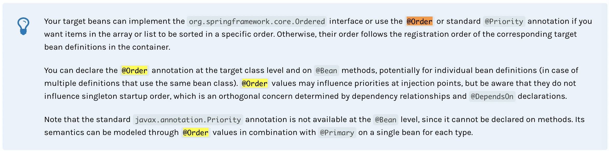
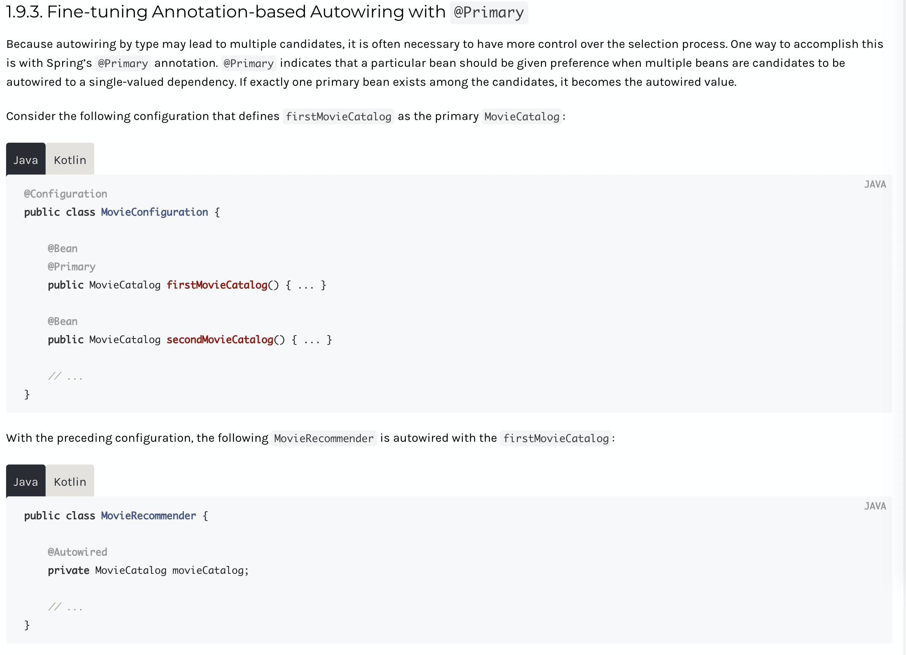
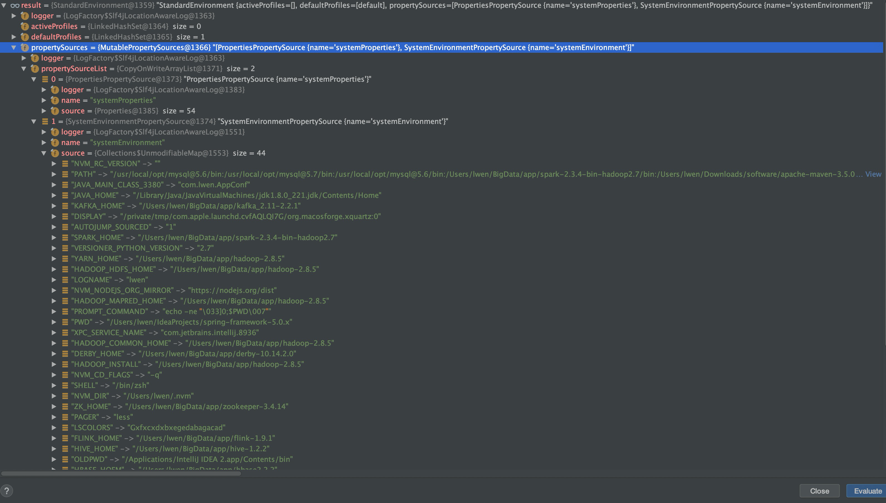
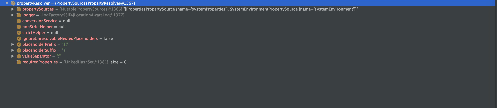

跳到之前的分支
1 | git checkout - |
查看历史
1 | # 每个提交在一行内显示 |
修正
比方说想在提交 fed14a4c 加上一些内容。

git 提交分支
1 | git add . |
从远程分支检出新的本地分支
1 | git checkout origin/aa aa |
1 | git checkout - |
1 | # 每个提交在一行内显示 |
比方说想在提交 fed14a4c 加上一些内容。
git 提交分支
1 | git add . |
1 | git checkout origin/aa aa |
我们经常会遇到 DO 和 DTO 以及 DTO 和 VO 之间的转换，一般我们的做法是使用 BeanUtil.copy 然后对于一些特殊的字段进行 Set 。但是这样做有几个痛点：
Map-struct 就是这样一个基于注解的编译后置处理器，让你写一些简单的注解满足数据转换的需求，类似于 lombok 是编译时期完成的，也没有什么性能问题。
1 | <properties> |
当我们使用 componentModel = "spring" 意味着我们可以使用 spring 进行依赖注入
componentModel= "default"：默认，可以通过 Mappers.getMapper(Class) 方式获取实例对象
1 |
|
1 |
|
1 |
|
| 符号 | 功能 | 性能损耗 |
|---|---|---|
| %c | 打印全类名 | 大 |
| %n | 换行，一定要在 pattern 的最后加上不然展示的就是一行了 | 小 |
| %ex | 打印出异常: 1. %ex{full} 全部异常堆栈 2. %ex{short} 最上面一层堆栈 | 小 |
| %d{MM-dd HH:mm:ss} | 格式化时间 | 小 |
| %level | 打印日志级别 | 小 |
| %m | 打印方法名称 | 小 |
举个简单的例子:
1 | <property name="CONSOLE_LOG_PATTERN" value="%d{MM-dd HH:mm:ss} |-%level %c#%m - %msg %ex{full}%n"/> |
可参考连接：
通过 setter 方法，直接使用 property 标签；p 标签，1. 导入 p 空间 2. 使用 p:属性 = ‘xx’
使用 property 是会进行自动 的类型转换，起作用的就是 PropertyExtend。
如果要对属性赋值为 null 的话，我们不能使用 name ,value ，必须将类型写在标签体里面
通过构造器，使用 constructor-arg 标签 name , value ，如果不指定 name那么按照顺序
classpath 和 classpath* 区别：
src路径下的文件在编译后会放到WEB-INF/classes路径下。默认的classpath是在这里。直接放到WEB-INF下的话，是不在classpath下的。
元数据配置就是能够让你明白如何进行应用开发，容器的实例化，配置，以及应用中对象的组织
传统配置元数据的方式就是使用 xml，在我们大部分的章节中会介绍一些关键的概念和 Ioc 容器的特性
当然目前不仅仅支持 xml ，目前推荐的是 Java 代码的方式以及注解方式：
@Configuration, @Bean, @Import, and @DependsOn 注解.spring的强依赖是是 JCL (Jakarta Commons Logging API ) 以及他的实现 commons-logging (JCL的标准实现)。更加确切的说他是在spring-core 中被依赖的。
现在选择的话 spring 并不会使用 JCL 而是 slf4j 有两种方案关闭 common-logging：
从spring-core模块排除依赖（因为它是唯一的显式依赖）commons-logging的模块
或者依赖于一个特定的commons-logging依赖，用一个空jar替换这个依赖（更多细节可以在SLF4J FAQ中找到）。
排除包之后还需要将 jcl 的调用连接到 slf4j 上，并且添加 slf4j 的具体实现：
1 | <dependencies> |
整个调试过程基于注解驱动的 Spring Freamwork 5.x 源码
整个启动大致的流程可以分为设置 bean 工厂，注册 beanDefinitions ，启动容器 三部分。
1 | public AnnotationConfigApplicationContext(Class<?>... annotatedClasses) { |
看一下在 Spring Doc 中对 @Order 和 @Primary 的说明


获取环境，如果非 Web 情况下默认就是 StandardEnvironment
1 | /** |
这个 Env 中包含了系统变量和Java 的环境变量，上面是java 系统变量，下面是环境变量：

另外就是属性解析器：

人的动作不断的跳动，然后中间有一结是没有了 这就是被跳切了
将人物的一个动作和另外一个细节动作相贴合 比如一开始人走过来 然后细节到 脚上 最后又到人走到镜头跟前。中间的细节部分就是我们的表现主体的一个时间和空间的位移 。
和贴合切一样，但是不一样的是中间的细节转换成另外一个表现主体的一个画面，比如移动到一个鸟上。
光圈 F 值=焦距/光圈直径 而透光面积是 pi x r2 所以是和平方的倒数一致 ，那么 1.4x1.4 =1.9 2*2=4 所以是两档的区别
对于效果的重复应用可以 ctrl+c 赋值效果，然后到 master 上粘贴效果 那么对于同一个素材的所有的片段都会被加上统一效果
对于一些效果我们希望给到另外一些素材，注意跨素材的方式上面的技巧就不适用了，我们使用 ctrl+c 复制，然后使用 ctrl+alt+v 粘贴效果
对于音频则是可以多个轨道批处理，首先选择音轨混合器

 立体声子轨道，然后需要的一起调整的轨道放到一个子混合里面直接调整子混合就 ok 了
立体声子轨道，然后需要的一起调整的轨道放到一个子混合里面直接调整子混合就 ok 了

添加视频&音频转场 shift+D
单独添加视频转场 Ctrl+D
单独添加音频转 Ctrl+shift+D
切分素材 Ctrl+K
波纹剪辑 Q&W
延长剪辑至时间轴 Shift+Q&W
匹配帧 F
Shift+R 反向匹配帧
(反斜杠) 快速缩放
ctrl+(反斜杠） 隐藏项目栏
lt+方向键 移动素材（需要激活轨道）
Alt+Shift+方向键 快速移动素材
I/O 设置工作区 ；删除选区
’ 抽取片段
ctrl+加减号 缩放轨道宽度
shift+加减号 扩展/缩小所有轨道宽度
shift+123 快速切换窗口
这个东西的全名是 LookUpTable 也就是将画面中的颜色批量的替换成另外的颜色，Luts 大致分为两类，矫正 Luts 和风格 Luts ，一般我们会在添加 Luts 之前对画面的颜色进行调整，这样的效果是会被 Luts 再进行二次的映射，所以总的效果是在 Luts 的风格之下的。那么另外的就是如果在 Luts 之后调整就很容易突破 Luts 的限定，所以根据需求在添加 Luts 前后进行颜色风格的调整。
一般的我们可以建立一个控制调整图层来应用 Luts 然后整个的格调是统一的，然后我们分着对每一部分进行调整。
还有我们需要将所有的 Luts 导入到 PR 中避免每次都需要一个个选择。我们直接在 PR 中就可以预览我们的 Luts
最后我们调整好的 Luts 还可以直接导出 cube 然后给其他人用。
在我们的文件名在系统中修改了以后 pr 找不到对应的文件，然后就显示脱机，我们可以使用查找然后手动关联这些更改后的文件。
首先选择多个素材，然后点击自动序列匹配

shift+delete 删除素材以后后面的素材会跟上来
提升就是把这段选中的出入点之间的素材删除掉，后面的素材不跟上来
提取则是删除并且后面的素材跟上
注意一点就是我们所有的操作在只会被应用到指定的轨道上面，如果那个轨道没有被激活则不会对他生效。
在我们选择提升的时候提升操作只会被作用域我们激活的视频或者音频轨道，例如这里只激活了音频关闭了视频。

假如我们使用提取的话就不一样了，视频和音频都会被干掉抽出，因为这个时候视频音频同步锁定的。我们取消视频和音频的同步锁定就好了。可以看到后面有因为去掉了音频的时间差。

我们按住 ctrl 键+ 拖入素材素材会被插入到以前的素材中，而不会覆盖以前的素材
选择一个面板使用 +/- 可以放大滚动条和缩小
使用 ctrl+ +/- 可以放大视频轨道
使用连续预览视频就可以看到更多的帧照片了。


在最左边有两个 a 和 v 只能激活一个视频一个音频所以这个就是插入的时候默认的一个轨道
可以理解为素材中截取一段作为一个新的素材，我们选择入点和出点然后直接拖动到素材箱中就生成了一个子剪辑，但是这个的子剪辑名字所有的信息和原素材一样，而且在时间线上可以看到他有一个小三角也就是他的长度被限定了，我们希望生成子剪辑的时候限定一下名称和是否裁剪可以按 ctrl+拖动素材

取消修建的话在时间线上我们可以修改出入点的位置然后拖动而选中后就不行了，被裁减后的视频会有一个小三脚
在时间线上打的标记就在时间线上然后在素材监视器中的标记就是素材上的。都可以用 M 来做标记
可以切换到标记面板直接查看我们标记点详细信息

在车上看着路边飘扬着的红旗，才意识到九月就要结束了。这一个月发生了很多难过、开心和有趣的事情，想通过这篇文章总结一下，或者说记录这些美好，以后的某一天再看这篇文章依旧能够嘴角上扬。
从入职到九月将近一个月的时间，这一个月基本在熟悉流程用了一两个需求熟悉开发流程和集团中间件。接下来就是 99 大促 和 双11 需求的支持和稳定性保障。
这次 99大促章鱼狂欢城，是我第一次作为开发参与 S 级大促系统开发和稳定性保障，整个过程充满了挑战和艰辛，同时暴漏出自身大量的问题和不足，在技术、业务、思考方式等方面都有不同程度的纰漏和待改进的点。
每次大促都是排期短需求多，所以对于开发速度上有很高的要求，并且对于频繁变化的需求也要有相应的心里准备和代码框架设计，对可能变化的节点预测，留出足够的扩展点。
在这次开发过程中有很明显的感触到如果很多代码不做抽象，下次需要用到相似的功能只能拷贝以前的代码做修改，代码中会出现大量的冗余，而且必须要一行行的理解别人的代码，有时候会觉得还不如自己写来的省事。但是注意一旦意识到这部分本来是可复用、可抽象、可被封装，那么这部分代码一定要有充分的设计，让这部分轮子具有较好的扩展性、健壮性以及易用性，否则你只是在逼迫下一个人必须造轮子，下一个看到你代码的人就是你现在的处境。既然花了时间投入到轮子的开发就应该产出优质的通用的代码。
举个简单的例子，对于常常使用的 Excel 导出，我们通常会将 MapList 或者 BeanList 作为数据源，那么对于 BeanList 这种规整的结构使用注解驱动最合适不过了，后续的使用只需在 Bean 上写对应的注解。而 MapList 应该也有对应的工具将数据和列名绑定，最后我们只需要关心列信息。但事实上很多人都有使用到导出 Excel 功能，但是这些代码都分散在各个业务代码当中，一方面破坏了业务流程的完整性，另外没有可复用性。
看了项目中的很多代码，很少有人能写出自表达的代码，一方面是因为历史包袱，前面没有设计，而业务快速迭代导致后人只能加判断条件在原有代码上堆叠。另一方面需求多任务重时间紧，所以没有抽象只想着尽快实现功能尽快上线。而后者常常就是导致前者出现的原因。
在互联网公司，快速迭代是最基本的要求，毕竟国内互联网公司不像外企对代码质量进行严格把控，项目时间也拖的很长。行业现状很难会有变化，而开发人员在短期内很难把自身水准提升到能写出自表达代码，所以目前最行至有效的解法是 注释 + 规范 对于复杂的业务逻辑尽量多用一些注释进行说明业务框架和思路，另外严格遵守 《阿里巴巴编码规范》中提到的点，保持代码风格统一。
在编码过程中，经常为了快速响应需求解决问题，看完 PRD 就开始 coding ，往往后来会发现这样一味的堆代码会导致很多问题变得难解，或者写出来的代码质量很差，有种拆东墙补西墙的感觉。
所以理解和思考完需求后的第一件事应该是打草稿，画出业务流图，设计业务框架，明晰如何组织包和类，对于流程中的核心点算法如何实现，可以采用哪些设计模式明晰业务结构，可以使用哪些轮子简化开发等等……
然后进行快速编码阶段，编码需要保证精力集中，避免因为被打断出现思维断线造成的 bug ，编码结束后使用静态检查工具，扫描可能存在的问题。尽量一次编码跑通，不要反复修改，减少部署系统所花费的时间。
看的代码太少，只有看的多了才会知道好代码是什么样子，才会明白原来这些地方有更好的设计。后面保持阅读优秀的二方包和集团中间件。目前只看了 Pandora 源码，总结成了 ATA ，后面计划整理 Diamond 和 MateQ 源码，整理笔记。另外再看一遍 Pandora 主要看框架的设计，而非流程。

以前的好习惯不能丢，对于出现的错误要勤于记录，错误原因 -> 排查思路 -> 耗时 -> 排查经验 -> 避免方案 给思维打补丁，让自己逻辑更缜密，对于一些常见报错，快速 troubleshooting 。 可以把这写问题记录都放到 csdn 上，形成自己的问题引擎。

要保持对开源项目的接触和学习，来集团以后感觉和外部的技术脱节了，99 % 技术都是集团内部中间件，很少使用到新技术，保持对新技术的学习保持对技术的敏感度。

个人博客 好久没更新了 ，最新的一篇是在入职前写的，最近忙了也变懒了。保持输出，技术，思考，感想。保持每个月两篇博客。

对于招商部分的业务不够了解，本来的预期是熟悉营销工作台中常见的功能，对于其中的一些专有名词也要熟知含义，理解系统中的业务层次，画出大致的结构图。重要的是每部分业务应该自己创建测试然后尝试跑通一个流程，并且要和代码对应上，这是一个长期的工作内容，因为把这个系统搞清楚是一件比较困难的事情，系统的复杂度和人员参与度都太高，以及额外的 DTS Job ，只能先一点点的摸索着部分业务和代码，归纳总结系统架构，熟悉大家的代码风格，和已经存在的轮子，至少要有些印象避免重复的轮子。
最近将近两个月的时间一直在做数据中心的建设工作，主要对阿里表格活动现场重写，还有双十一数据看板。为了以后更多的数据产品的出现应该有更详细的框架设计，沉淀系统快速响应能力，配置化能力，自动化能力。另外需要与前端打通，产出更多的业务组件与约定。
大部分时间都被埋没在需求和修复问题中，很难看到自己所负责模块的全貌，对于部分熟悉但却不明白这部分的所处的位置和意义，这也是因为对于整体业务不够熟悉对平台的现状不能很好的把握导致的。这部分欠缺很难在短时间内得到填补，需要长时间沉淀和对业务的持续思考，才会有质的变化。
看书对形成电商思维和框架是一种简单而行之有效的方式，多看看马老师写的书，多关注电商领域的行业动态。
很明白自己不太善于沟通，所以对这次百阿之旅带着紧张，对于快融入团队并不是很有信心。但是也很期待，期待够能突破自己，发现自己新的可能，简单来说变得更 Open ，认识一些小伙伴。令人欣喜的是，这份期待没有被辜负～
缘分真的是一个很神奇的东西，一群来自不同城市、不同部门、不同年龄的人组成了这么温暖、团结、活力的 1227 百阿班。很幸运来到 1227 ，很幸运来到 三生万物 ，很幸运遇到你们，遇见新的自己 ～
感谢百阿让我遇到这么一群，有趣的、热情的、可爱的、灵动的、温情脉脉的人。
一圈自我介绍后，其实我一个人名都没记住，虽然当时每个人自我介绍完后我都会重复好几遍，重复着重复着就忘了～原谅我的烂记性不是不想记住你们！！！不过最后认人名 PK 环节，我可是能叫出全班人的名字，得瑟一下。
印象比较深刻的是五个小游戏任务，大家在互相还不熟悉的情况下能够做到相互信任、团结一致、互相帮助，用智慧和合作共同创造价值，取得成果。很多环节很辛苦也充满了困难，但我们在短时间内形成的超强凝聚力和执行力，让团队势如破竹，朝着目标冲刺。在这个过程中出现了很多小彩蛋，在 “达芬奇密码” 环节大家看完规则你一句我一句着的说着游戏规则，我还没听懂规则是啥，天相突然跳出来说了一个听起来很牛逼的调度算法，目瞪狗呆。又是一个算法怪兽，规则看完调度算法就出来了，感觉智商受到了降维打击…..
由于算法对于调度者依赖性太高，对调度内存是一个很大的考验，为了保险起见我们采用了两趟遍历，虽然中间出了小插曲，导致牌序混乱。大家都一脸懵逼的时候，天相挺身而出力挽狂澜，终于体会到什么叫做：“此时此刻，非我莫属！”。
 游戏任务
游戏任务 十只脚落地
十只脚落地 安全部门合影
安全部门合影
经过第一天的破冰，第二天大家慢慢开始变得熟悉起来，尤其是在这次的土话的探寻中，团队更加凝聚。第一次见到阿里土话是在公司的大屏上：“此时此刻，非我莫属” 这是我记得最清楚的一句，也是最感动我的一句。
因为信任，所以简单。整个探寻任务从分工到执行只在很短的时间，没有过多的担心某个环节出问题了怎么办？某些子任务完不成怎么办？我们相信大家都能够把自己的那一部分做的很精彩，都很自觉的专注于自己的部分，相信伙伴，一切变得简单起来。
一点多才开始剪视频，又感受了一把速度与激情，有一种五点前赶发布的感觉。既要冷静又要快速响应，在大家的共同努力下，开讲前视频渲染结束。
晚上一起去庆功呀～ 5号食堂！

结束后，弦柱在群里说了一句，“今天聊的很开心，好像又回到了学生时代！”对的！就是这种感觉，好放松～
昨天还在一块团队任务，马上就要因为另外的任务分开。“拥抱变化” ，变化来的如此之快。在弦柱的带领下我们完成了对飞猪业务的探寻，让我重新认识了飞猪，她的历史，现状，困难与机遇。对于从来没接触过的 OTA 也有初步的了解。
在这个团队最大的感受就是有活力，因为我们的队长 — 弦柱（未来的杭州市旅游局局长） 就是一个很有活力的人！对团队也非常认真负责，带着我们去飞猪部门探索，采访！准备演讲到凌晨两点多，辛苦啦～

对这个环节印象也非常深刻，每一个人的分享都好像是一本十分值的回味的书，透过他们的讲述读到不同的精彩故事。通过他们的精彩看到自身的不足，通过他们的失落看到逆境中的坚韧，每个人的经历都很有意思，可惜时间不够不然肯定整整一晚都在谈心交流。
不得不说十分佩服 泰伯，一个敢闯、敢拼、敢探索。知道自己想要什么，追求的是什么，并且付诸于行动，很少人能有这种想法和魄力。放一张大佬的照片，像不像香港扛把子 , haha~

公益真的是一件帮助他人幸福自己的事情，在这个过程中能认识到自己的价值，也能为他人创造价值。公益能够感染身边的人，让更多的人以一颗柔软的心来对待这个世界。有很多同学反映在做公益的过程看到很多许多人的善举，就像马老师所说的要时刻保持爱，对社会、对自然、对身边的人，爱的力量小而强大。做一个内心温暖而强大的人。
公益后的 “总裁局” 也是让人十分放松和开心，好久没和这么多人一起开开心心吃吃喝喝玩玩了。
这就是阿里，以前我们会说：“这是阿里”，但是现在我们会告诉别人：“这就是阿里！”。因为现在的我们是一个不追求大，不追求强，我们追求成为一家活102年，截止到2036年，服务20亿消费者，创造1亿就业机会，帮助1000万家中小企业盈利的好公司。
对于新六脉神剑价值观，并不是为了改变我们的想法，或是束缚我们，而是在这个共识下选择同路人。价值观并非口号而是我们看到不论是少年阿里还是成年后的他一直都在用实际
另外对于年轻人，保持自己的好恶和棱角很重要，每个人都拥有对机会的选择权！
在阿里必须要遵守规则，在自身利益和公司里冲突的时候以公司利益优先，保证公司数据安全，不要做触碰公司红线的事情。
来到阿里的第一年最重要的是 “活下来” ，因为作为一个新人很难融入到节奏走么快，业务难度这么高，新人培训少的团体。我们最重要的不是说想着如何实现集团的大目标，保证自己能够活下来，landing — 技术落地，业务落地。要明白自己生存在一个什么样的环境，去了解这个环境，适应这个环境。
而三到五年的沉淀，才能真正成为一个真正的阿里人，这个时候就需要面对更过的变化和更快的节奏，多从自身去思考问题。
感谢在这次遇到的优秀的小伙伴们，因为我相信 无论我遇见谁，他/她都是我生命该出现的人，绝非偶然，他/她一定会教会你一些什么。
属七：感谢我的小天使，看得出来你是一个温暖的、热爱生活的人。从礼物的包装上，看得出你花了不少心思，真的非常感动。尤其是你的赠言充满了鼓励与期待，谢谢！你的字写的真的很棒～
弦柱(局长)：阳光、帅气、自信、具有少年感。跟他待在一块感觉自己又回到了大学校园，轻松愉悦！
余征：认真、严肃、细致。短短几个月就减掉 1/3 的体重的毅力，令人钦佩。
泰伯：敢闯、敢拼、有想法。看起来是一个很严肃的大佬，其实是很好相处的大佬！感谢鼓励陪伴！
拾月：博学、美丽、有气质。第一眼就被气场震撼到了，除了气质还有博学多识！
星吟：自律、美丽、脑洞大。每次不鸣则已，一鸣惊人，一句吐槽能让我笑一两分钟，苹果肌要坏掉了～
珺兮：聪明、文静、可爱。都是应届生相似点还蛮多的，也能说到一块去。可爱！有趣！
天相：自信、认真、有责任、有主见。令我印象深刻的不用一次性杯子盛可乐，因为不环保！！！
迪奇：聪明、好奇心、冷幽默。我们的数据中台，反应快，技术强，感觉内心也很萌哈哈，我们技术人的楷模。
久谙：幽默、有趣、情商高。思维太活跃了，想象力也超级棒，一句话带动全场气氛！
山魏：认真、戏精、沉稳、可靠。因为角色投入一炮而红，红遍大江南北！但是也非常的可靠，做事认真、结果导向～
顺序不分先后 ，按照 “总裁饭局” 次序，希望下次再相见，我们还能按照这个顺序坐在一起，聊天喝酒！
优秀的人大多会玩儿，幽默，会来事儿，正是因为这些特质，能够吸引并凝聚一波人，作为一个不太说话的程序员，应该培养锻炼自己让自己变的活跃，open！这次百阿是一个良好的开端。感谢认识你们，真的很开心～